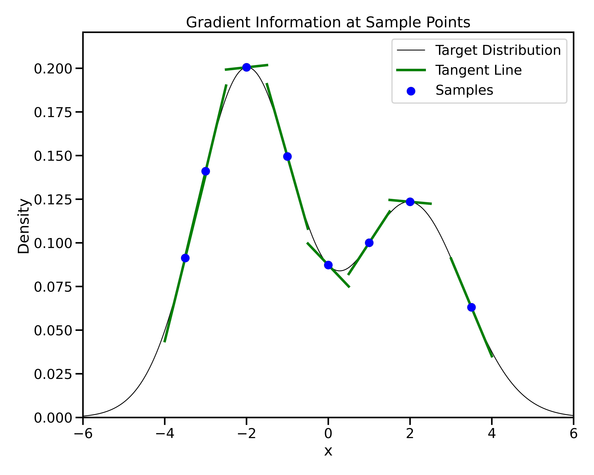

Bayesian Inference for Cosmology with JAX


Inference in Cosmology: The Frequentist Pipeline


- cosmological parameters (Ω): matter density, dark energy, etc.
- Predict observables: CMB, galaxies, lensing
- Extract summary statistics: \(P(k)\), \(C_\ell\) , 2PCF
- Compute likelihood: \(L(\Omega \vert data)\)
- Estimate \(\hat{\Omega}\) via maximization (\(\chi^2\) fitting)
Frequentist Toolbox
- Optimizers/Gradient descent
- 2-point correlation function (2PCF)
- Power spectrum fitting: \(P(k)\), \(C_\ell\)
Inference in Cosmology: The Bayesian Pipeline


- Start from summary statistics: \(P(k)\), \(C_\ell\) , 2PCF
- Sample from a Prior \(P(\Omega)\)
- Compute likelihood: \(L(Obs \vert \Omega)\)
- Sampler from the Posterior \(P(\Omega \vert Obs)\)
Bayesian Toolbox
- Priors encode beliefs: \(P(\Omega)\)
- Hierarchical Bayesian Modeling (HBM)
- Probabilistic programming (e.g., NumPyro)
- Gradient-based samplers: HMC, NUTS
Inference in Cosmology: The Bayesian Pipeline

- Prior: Theory-driven assumptions \(P(\Omega)\)
- Latent variables: Hidden/unobserved \(z \sim P(z \mid \Omega)\)
- Likelihood: Generates observables \(P(\text{Obs} \mid \Omega, z)\)
- Posterior: infer \(P(\Omega \mid \text{Obs})\)
Inference in Cosmology: The Bayesian Pipeline
Bayes’ Rule with all components:
Full decomposition of the posterior. The denominator marginalizes over all possible parameters.
\[ \underbrace{P(\Omega \mid \text{Obs})}_{\text{Posterior}} = \frac{ \underbrace{P(\text{Obs} \mid \Omega)}_{\text{Likelihood}} \cdot \underbrace{P(\Omega)}_{\text{Prior}} }{ \underbrace{ \int P(\text{Obs} \mid \Omega) P(\Omega) \, d\Omega }_{\text{Evidence}} } \]
\[ \underbrace{P(\Omega \mid \text{Obs})}_{\text{Posterior}} = \frac{ \underbrace{\int P(\text{Obs} \mid \Omega, z)\, P(z \mid \Omega)\, dz}_{\text{Likelihood (marginalized over latent $z$)}} \cdot \underbrace{P(\Omega)}_{\text{Prior}} }{ \underbrace{ \int \left[ \int P(\text{Obs} \mid \Omega, z)\, P(z \mid \Omega)\, dz \right] P(\Omega)\, d\Omega }_{\text{Evidence}} } \]
In practice, we drop the evidence term when sampling — it’s a constant.
\[ P(\Omega \mid \text{Obs}) \propto \underbrace{\int P(\text{Obs} \mid \Omega, z)\, P(z \mid \Omega) \, dz}_{\text{Marginal Likelihood}} \cdot \underbrace{P(\Omega)}_{\text{Prior}} \]
\[ \log P(\Omega \mid \text{Obs}) = \log P(\text{Obs} \mid \Omega) + \log P(\Omega) \]
Bayes’ Rule in Practice
The posterior combines theory (prior) and data (likelihood) to infer cosmological parameters.
Latent variables \(z\) encode hidden structure (e.g., initial fields, nuisance parameters).
The evidence is often ignored during sampling (it’s constant).
Model comparison via the Bayes Factor:
\[ \text{Bayes Factor} = \frac{P(\text{Obs} \mid \mathcal{M}_1)}{P(\text{Obs} \mid \mathcal{M}_2)} \]
Sampling Algorithms at a Glance
Metropolis-Hastings (MCMC)
Propose: Random walk \(\Omega' \sim \mathcal{N}(\Omega^t, \sigma^2)\)
Accept:
\[ \alpha = \min\left(1, \frac{P(\text{Obs} \mid \Omega') P(\Omega')}{P(\text{Obs} \mid \Omega^t) P(\Omega^t)}\right) \]
Hamiltonian Monte Carlo (HMC)
- Propose: Simulate physics Trajectory via gradients \(\nabla\_\Omega \log P(\text{Obs} \mid \Omega)\)
- Accept: Based on Hamiltonian energy conservation. \(\alpha = \min(1, e^{\mathcal{H}(\Omega^t, p^t) - \mathcal{H}(\Omega', p')})\)
NUTS (No-U-Turn Sampler) Same as HMC, but auto-tunes:
- Step size
- Trajectory length (stops before looping back)

Gradient-Based Sampling in Action


Gradient-Based Sampling in Action
- In high dimensions, random walk proposals (MCMC) often land in low-probability regions ⟶ low acceptance.
- To maintain acceptance, step size must shrink like \(1/\sqrt{d}\) ⟶ very slow exploration.
- HMC uses gradients to follow high-probability paths ⟶ better samples, fewer steps.

Differentiable Inference with JAX
When it comes to gradients, always think of JAX.
An Easy pythonic API
import jax
import jax.numpy as jnp
from jax import random
def sample_prior(key):
return random.normal(key, shape=(3,)) # Ω ~ N(0, 1)
def log_prob(omega):
return -0.5 * jnp.sum(omega**2) # log p(Ω) ∝ -Ω²
log_prob_jit = jax.jit(log_prob)Easily accessible gradients using GRAD

Full Field Inference with Forward Models
Bayesian Inference using power spectrum data:
Bayesian Inference using full field data:


- Recap: Bayesian inference maps theory + data → posterior
- Cosmological Forward models
- Start from cosmological + latent parameters
- Sample initial conditions
- Evolve using N-body simulations
- Predict convergence maps in tomographic bins
- Simulation-Based Inference
- Compare predictions to real survey maps
- Build a likelihood from the forward model
- Infer cosmological parameters from full field data
Full Field vs. Summary Statistics
- Preserves non-Gaussian structure lost in summaries
- Enables tighter constraints in nonlinear regimes
- Especially useful in high-dimensional inference problems
- See: Zeghal et al. (2024), Leclercq et al. (2021)
- üîú a talk on this topic this Thursday